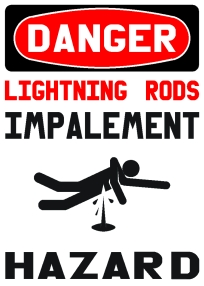

Sunday, May the 29th, 2005
back to: title, date or indexes

The above graphic is not merely a sensible warning. Glyn Webster (for it is he) reminds us that during the American War of Independence there was quite a spat between Benjamin Franklin and King George III regarding the correct design of lightning rods. Franklin advocated the use of a sharpened end to the rod, which many English electricians of the time took issue with. Benjamin Wilson, a member of the Royal Court circle of George III, believed that the pointed rod actually elicited lightning strikes, and that rods with a rounded sphere were safer. Other English colleagues favoured the use of blunt-tipped rods. King George III's involvement in the dispute was politically motivated rather than having any scientific basis. As Franklin was one of the signatories to the 1776 American Declaration of Independence, the use of sharpened rods was seen to be an upstart Republican idea. Further fuel was added to the fire when the Purfleet powder magazine in outer London burnt down after a lightning strike, and the Franklin rods were blamed. The King ordered that all lightning rods throughout the empire were to have a cannon ball placed on the top of them, or be removed.
You can read more about this exciting dispute here. Meanwhile, if your enthusiasm for lightning rods remains unquenched, you really ought to read The Lightning-Rod Man by Herman Melville.